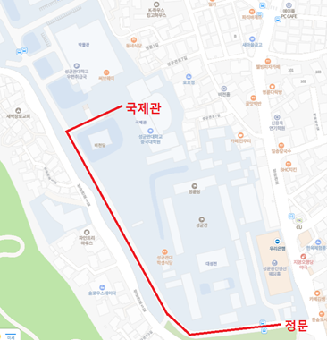

2024 LSK Winter Conference
Home
Programs
Abstracts
Registration
Venue
Committee
REGISTER HERE
Conference Venue
성균관대학교 국제관
정문에서 학회장소까지 오시는 길

주차장
캠퍼스 내 D구역: 600주년 기념관 지하, 국제관 지하
(주차권은 학회 당일 접수대에서 판매)